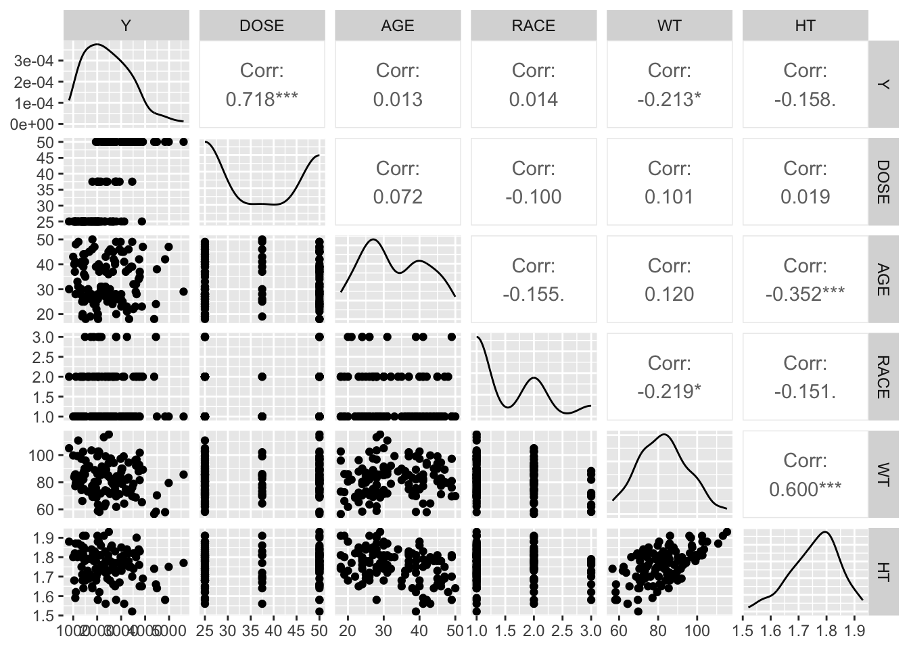
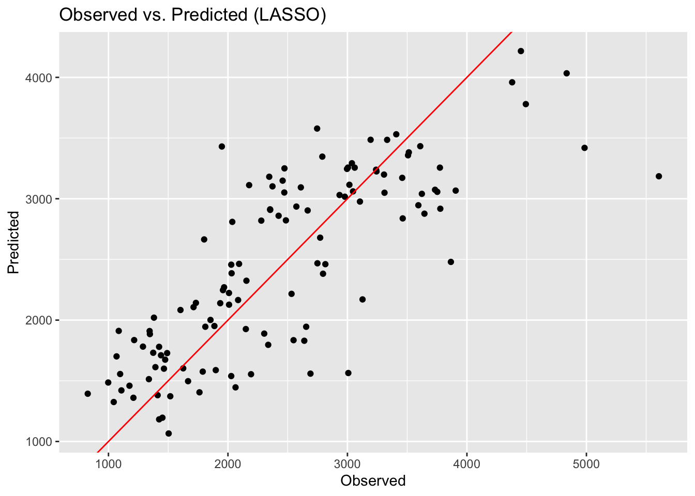
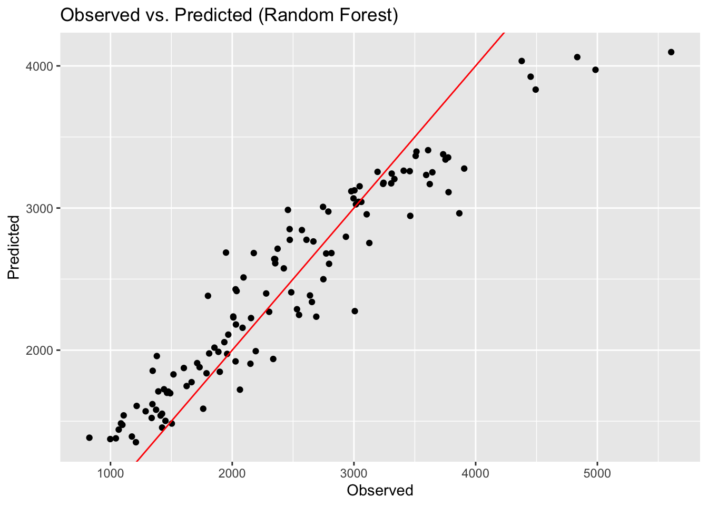
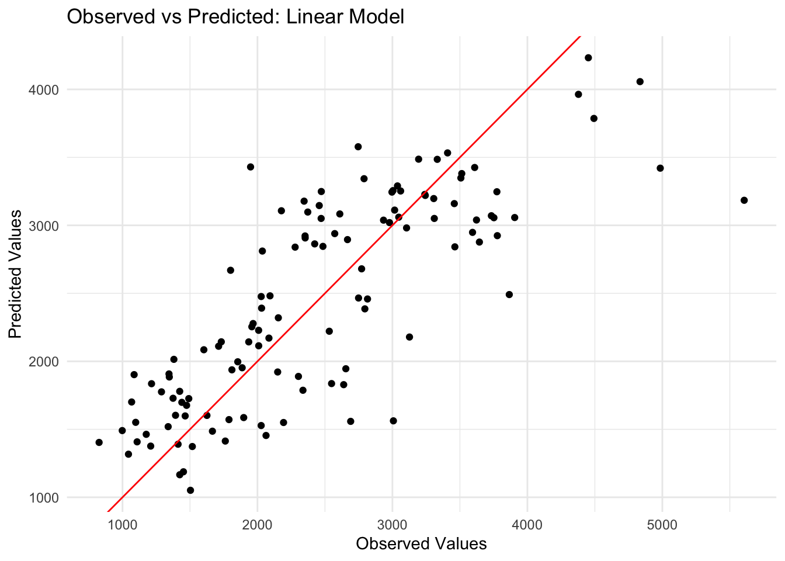
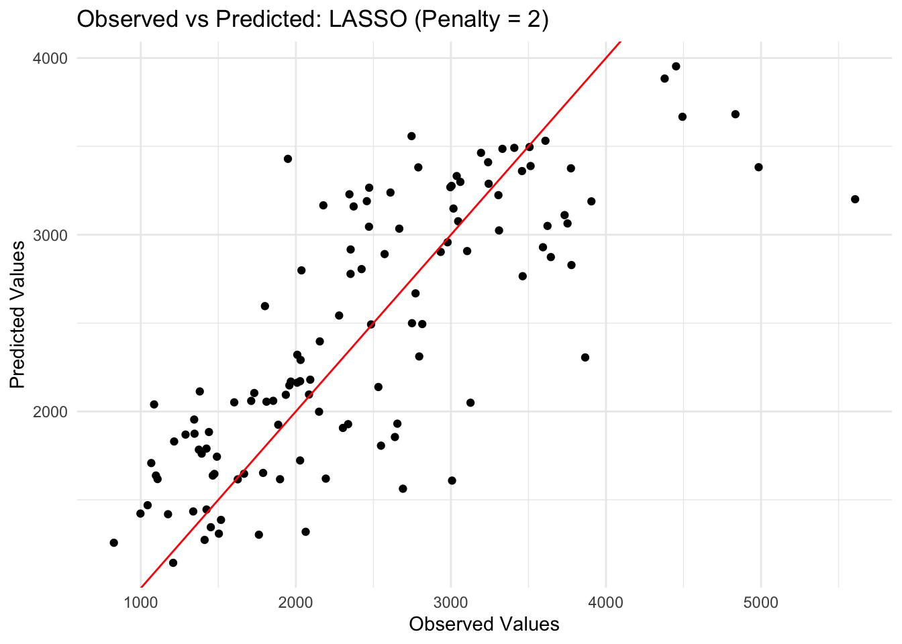
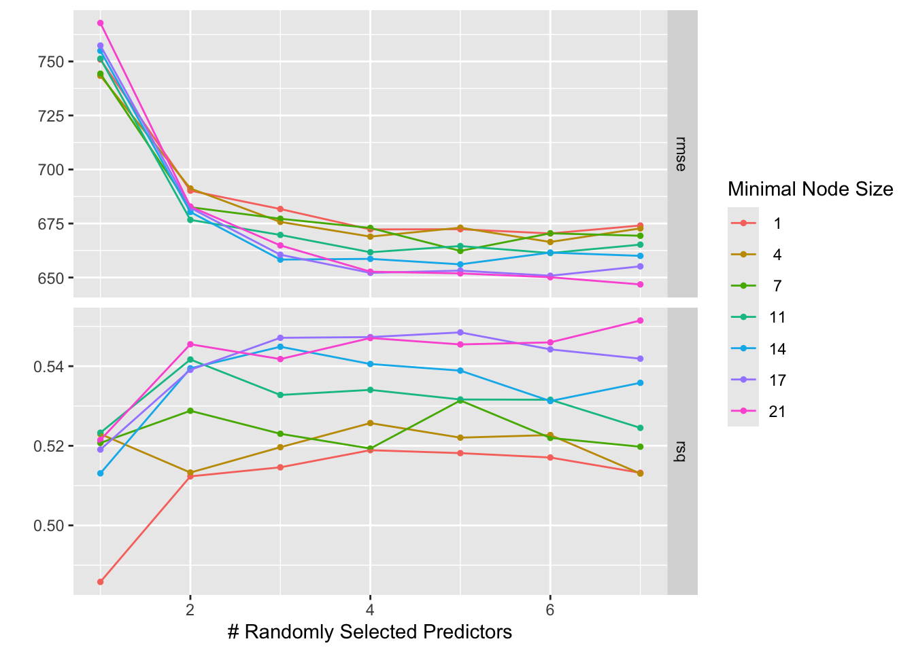
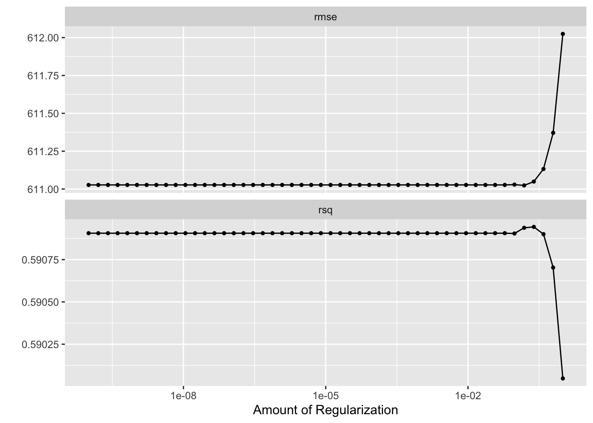
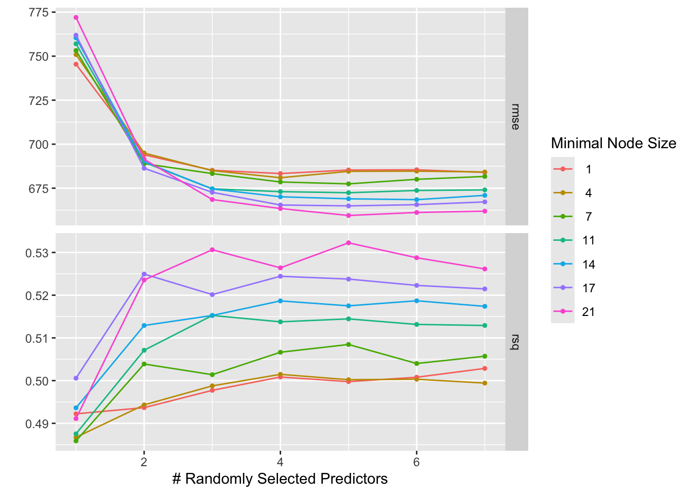

Loading the data from my folder that it is placed in
# Load cleaned data from the specified foldercleaned_data <-readRDS(here::here("ml-models-exercise", "cleaned_data.rds"))# Preview the first few rowshead(cleaned_data)
# Save the updated dataset back to the same foldersaveRDS(cleaned_data, here::here("ml-models-exercise", "cleaned_data-updated.rds"))
Pairwise correlation for the continuous variables. If this were to reveal strong correlations, we would consider removal of them.
# Select only the continuous variablescontinuous_vars <- cleaned_data %>%select(where(is.numeric)) # Select numeric variables only# Create the correlation plotggpairs(continuous_vars)

As seen above in the correlation coefficients, there are some variables with relatively strong corrrelations like 0.600 for height and weight (this one makes intuitive sense, for instance). However, nothing seems excessive (e.g., above an absolute value of 0.9).
So, as a result, it would be concluded that we do not have too much of a problem with collinearity.
Feature Engineering - What It Is
A term for creating new variables/doing stuff to the current variables to make new variations of them. For example, above, combining the races into the same grouping is an example of feature engineering. Height and weight have a relatively high correlation. It is suggested to make them into BMI (below). It looks like the weight is in pounds and the height is in meters already.
Min. 1st Qu. Median Mean 3rd Qu. Max.
18.69 24.54 26.38 26.63 29.70 32.21
The normal BMI range for an adult is typically between 18.5 and 25 for most adults, so the output is reasonable.
Model Building
Linear model with all predictors
LASSO regression
Random forest model (RF)
library(glmnet) # For LASSO
Loading required package: Matrix
Attaching package: 'Matrix'
The following objects are masked from 'package:tidyr':
expand, pack, unpack
Loaded glmnet 4.1-8
library(ranger) # For Random Forest
Create the “recipe”
cleaned_data$SEX <-as.numeric(as.character(cleaned_data$SEX))recipe_spec <-recipe(Y ~ ., data = cleaned_data) %>%step_normalize(all_numeric(), -all_outcomes())
Defining the models, using the glmnet package for the LASSO model and the ranger packages of the random forest model.
# Define the LASSO model with penalty = 0.1lasso_spec <-linear_reg(penalty =0.1) %>%set_engine("glmnet")# Define the Random Forest model with random seedrf_spec <-rand_forest(mode ="regression") %>%set_engine("ranger", seed =1234)# Random Forest workflow rf_workflow <-workflow() %>%add_recipe(recipe_spec) %>%add_model(rf_spec)# Lasso workflow lasso_workflow <-workflow() %>%add_recipe(recipe_spec) %>%add_model(lasso_spec)
Fitting the models
# Fit the Linear model lm_fit <-lm(Y ~ ., data = cleaned_data)# Fit the LASSO modellasso_fit <-fit(lasso_workflow, data = cleaned_data)# Fit the Random Forest modelrf_fit <-fit(rf_workflow, data = cleaned_data)
Predicting with each model and assessing the models’ quality via rmse
# Make predictions for the Linear Modellm_predictions <-predict(lm_fit, cleaned_data) %>%as_tibble() %>%bind_cols(cleaned_data %>%select(Y)) %>%rename(predicted_Y = value)# Make predictions for the Linear Modellm_predictions <-predict(lm_fit, cleaned_data) %>%as_tibble() %>%bind_cols(cleaned_data %>%select(Y)) %>%rename(predicted_Y = value)# Make predictions for the LASSO modellasso_predictions <-predict(lasso_fit, cleaned_data) %>%bind_cols(cleaned_data %>%select(Y))# Make predictions for the Random Forest modelrf_predictions <-predict(rf_fit, cleaned_data) %>%bind_cols(cleaned_data %>%select(Y))# Calculate RMSE for the Linear Modellm_rmse <-rmse(lm_predictions, truth = Y, estimate = predicted_Y)lm_rmse
# A tibble: 1 × 3
.metric .estimator .estimate
<chr> <chr> <dbl>
1 rmse standard 581.
# Calculate RMSE for the LASSO modellasso_rmse <-rmse(lasso_predictions, truth = Y, estimate = .pred)lasso_rmse
# A tibble: 1 × 3
.metric .estimator .estimate
<chr> <chr> <dbl>
1 rmse standard 581.
# Calculate RMSE for the Random Forest modelrf_rmse <-rmse(rf_predictions, truth = Y, estimate = .pred)rf_rmse
# A tibble: 1 × 3
.metric .estimator .estimate
<chr> <chr> <dbl>
1 rmse standard 359.
Plotting the observed v. predicted for each model
# Plotting: Observed vs Predicted for Linear Modelplot1 =ggplot(lm_predictions, aes(x = Y, y = predicted_Y)) +geom_point() +geom_abline(intercept =0, slope =1, color ="red") +labs(title ="Observed vs Predicted: Linear Model", x ="Observed Values", y ="Predicted Values") +theme_minimal()# Plot observed vs. predicted for LASSOggplot(lasso_predictions, aes(x = Y, y = .pred)) +geom_point() +geom_abline(intercept =0, slope =1, color ="red") +# Add 45-degree linelabs(title ="Observed vs. Predicted (LASSO)", x ="Observed", y ="Predicted")

# Plot observed vs. predicted for Random Forestggplot(rf_predictions, aes(x = Y, y = .pred)) +geom_point() +geom_abline(intercept =0, slope =1, color ="red") +# Add 45-degree linelabs(title ="Observed vs. Predicted (Random Forest)", x ="Observed", y ="Predicted")

Why Do the Linear Model and LASSO Give Almost the Same Results?
Linear model: This is a standard regression model where the relationship between the predictors and the outcome is modeled as a linear function.
LASSO (Least Absolute Shrinkage and Selection Operator): LASSO is a type of regularized linear regression where it applies a penalty (the penalty value is set to 0.1 in this case) to the regression coefficients, shrinking some of them toward zero to reduce overfitting.
Since the penalty for LASSO (0.1) isn’t very large, it’s not shrinking the coefficients significantly. Therefore, the model behaves very similarly to a standard linear regression. In practice, this means that LASSO and linear regression will give nearly identical results unless the penalty is increased enough to cause significant shrinkage (which is typically done during model tuning).
I wanted to try the penalty increase.
# Define the second LASSO model with a larger penalty (penalty = 1)lasso_spec2 <-linear_reg(penalty =5) %>%set_engine("glmnet")# Lasso workflow for the second modellasso_workflow2 <-workflow() %>%add_recipe(recipe_spec) %>%add_model(lasso_spec2)# Fit the second LASSO modellasso_fit2 <-fit(lasso_workflow2, data = cleaned_data)# Get predictions for the second LASSO modellasso_pred2 <-predict(lasso_fit2, cleaned_data)# Add observed and predicted values to the datalasso_pred2 <- cleaned_data %>%bind_cols(lasso_pred2) %>%rename(predicted_Y = .pred)# Plot observed vs predicted for the second LASSO modelplot2 =ggplot(lasso_pred2, aes(x = Y, y = predicted_Y)) +geom_point() +geom_abline(intercept =0, slope =1, color ="red") +labs(title ="Observed vs Predicted: LASSO (Penalty = 2)", x ="Observed Values", y ="Predicted Values") +theme_minimal()plot1

plot2

Random Forest Outperforms LASSO and Linear Models
Random Forest: Random forest is an ensemble method that constructs many decision trees and aggregates their predictions. It is more flexible than linear regression models and can capture complex relationships between the predictors and the outcome. In this case, the random forest model has a lower RMSE, indicating it is performing better by making predictions that are closer to the true values.
Overfitting Risk: Although random forests perform well in terms of predictive accuracy, they can be prone to overfitting if the trees are too deep or if there are too many trees in the forest. This overfitting means the model might perform exceptionally well on training data but might struggle to generalize to unseen data.
Tuning the Models - Something that is Normally BAD BAD (without the cross validation)
For the LASSO model, we will tune the penalty parameter.
# Define the LASSO tuning grid (penalty values between 1E-5 and 1E2)lasso_grid <-tibble(penalty =10^seq(-5, 2, length.out =50))# Define LASSO model with a tunable penaltylasso_spec <-linear_reg(penalty =tune()) %>%set_engine("glmnet")# Define the workflow with the LASSO modellasso_workflow <-workflow() %>%add_recipe(recipe_spec) %>%add_model(lasso_spec)# Fit the LASSO model for each tuning parameter directly without cross-validationlasso_tune_res <-tune_grid(object = lasso_workflow,resamples =vfold_cv(cleaned_data), grid = lasso_grid,control =control_grid(save_pred =TRUE))# View the tuning results (only the penalty parameter will be varied)lasso_tune_res
Above, you’ll see RMSE as function of penalty parameter. You should see that the LASSO does best (lowest RMSE) for low penalty values and gets worse if the penalty parameter increases. At the lowest penalty, the RMSE is the same as for the linear model. This makes sense to me because at smaller penalties, the LASSO model behaves like a standard linear regression model, with minimal shrinkage of the coefficients.
As the penalty increases, the coefficients are forced toward zero, which reduces the model’s complexity and prevents overfitting. However, if the penalty is too high, it will shrink the coefficients too much, leading to underfitting. Thus, the RMSE increases as the penalty grows because the model becomes too simple to capture the underlying relationships in the data.
At the lowest penalty: The LASSO model behaves like a standard linear regression, giving the same result as if no regularization were applied.
As the penalty increases: The model becomes more regularized, reducing the complexity and leading to worse performance on the training data (higher RMSE).
This is a classic case of the bias-variance tradeoff: higher regularization reduces variance but introduces bias, leading to higher RMSE.
library(dials) # Make sure dials is loaded for parameter tuning# Define the tuning grid for Random Forest (mtry between 1 and 7, min_n between 1 and 21)rf_grid <-grid_regular(mtry(range =c(1, 7)), # mtry parameter with values from 1 to 7min_n(range =c(1, 21)), # min_n parameter with values from 1 to 21levels =7# 7 levels for each parameter)# Define Random Forest model with mtry and min_n as tuning parameters and fixed trees = 300rf_spec <-rand_forest(mode ="regression", trees =300) %>%set_engine("ranger", mtry =tune(), min_n =tune())# Define the workflow with the Random Forest modelrf_workflow <-workflow() %>%add_recipe(recipe_spec) %>%add_model(rf_spec)# Tune the Random Forest modelrf_tune_res <-tune_grid(object = rf_workflow,resamples =vfold_cv(cleaned_data), grid = rf_grid,control =control_grid(save_pred =TRUE))
→ A | warning: The argument `mtry` cannot be manually modified and was removed., Unused arguments: min_n
# Plot the tuning results (RMSE vs mtry and min_n)autoplot(rf_tune_res)

Above, I see that the RSME varies with the tuning. I think there is a slight bug here regarding mtry but I could not figure it out.
Notes for myself on Random Forest Tuning
For Random Forest, the tuning of mtry and min_n affects how the tree splits. A higher value of mtry means the model is considering more features at each split, potentially leading to better model performance. A lower value of min_n allows more splits, making the model more flexible and potentially overfitting. The combination of these two parameters determines the complexity of the model.
Key Points about mtry:
In the context of Random Forests, mtry is a hyperparameter that specifies the number of variables (or features) to be randomly selected at each split when growing a tree.
mtry controls the number of features considered for splitting at each node of the decision tree.
The default value of mtry in many implementations of Random Forests is usually the square root of the total number of features (for classification problems), or the number of features divided by 3 (for regression problems). This is a good starting point to reduce overfitting.
Smaller values of mtry (i.e., fewer features per split) lead to more randomness and less correlation between trees, potentially improving generalization but reducing accuracy.
Larger values of mtry (i.e., more features per split) make the model more deterministic and could lead to over fitting because the trees are more correlated.
It influences how “random” each tree in the forest is.
Higher mtry and lower min_n usually lead to a more flexible model that captures more patterns in the data, which is why they perform better in this case.
Key Points about min_n:
In the context of Random Forests, min_n is a hyperparameter that specifies the minimum number of data points (or observations) required to create a leaf node (the final decision-making point) in a decision tree.
min_n controls how “deep” or “complex” a decision tree can grow. If the number of observations in a node is less than min_n, the tree will stop growing further in that branch.
Smaller values of min_n allow the trees to grow deeper, as the algorithm will be willing to split nodes even if there are only a few data points left. This can lead to overfitting because the model can perfectly fit to the noise in the data.
Larger values of min_n lead to shallower trees because the algorithm will stop splitting earlier, which can help prevent overfitting by limiting the depth of the tree. However, if set too large, the model might become too simple and underfit the data.
Tuning with Cross Validation - Better best practice
# Set random seed for reproducibilityset.seed(123)# Create 5-fold cross-validation, repeated 5 timescv_splits <-vfold_cv(cleaned_data, v =5, repeats =5)
# Define LASSO tuning grid (penalty values between 1E-5 and 1E2)lasso_grid <-grid_regular(penalty(), levels =50)# Define the LASSO model specificationlasso_spec <-linear_reg(penalty =tune()) %>%set_engine("glmnet") %>%set_mode("regression")# Define the LASSO workflowlasso_workflow <-workflow() %>%add_recipe(recipe_spec) %>%add_model(lasso_spec)# Tune LASSO using 5-fold cross-validation, repeated 5 timeslasso_tune_res <-tune_grid(object = lasso_workflow,resamples = cv_splits,grid = lasso_grid,control =control_grid(save_pred =TRUE))# Visualize tuning results for LASSOautoplot(lasso_tune_res)

# Define Random Forest tuning grid (mtry from 1 to 7, min_n from 1 to 21)rf_grid <-grid_regular(mtry(range =c(1, 7)), min_n(range =c(1, 21)), levels =7)# Define the Random Forest model specificationrf_spec <-rand_forest(trees =300, mtry =tune(), min_n =tune()) %>%set_engine("ranger") %>%set_mode("regression")# Define the Random Forest workflowrf_workflow <-workflow() %>%add_recipe(recipe_spec) %>%add_model(rf_spec)# Tune Random Forest using 5-fold cross-validation, repeated 5 timesrf_tune_res <-tune_grid(object = rf_workflow,resamples = cv_splits,grid = rf_grid,control =control_grid(save_pred =TRUE))# Visualize tuning results for Random Forestautoplot(rf_tune_res)

LASSO: The RMSE should be lowest for smaller penalty values, with the RMSE being comparable to that of the linear model at very low penalties.
However, the RSME did increase with the cross validation model (from 590 to 511 at plateau) compared to the mdoel without CV, which is good because it means that it is less likely to be overfitting.
Random Forest: The RMSE for the RF model will likely be higher than the LASSO model, particularly because the RF model is more complex and overfits the training data, even with cross-validation. This complexity also leads to the higher RSME.
Comparing the cross validated model to the non-cross validated, the RSME also went up. This is expected because the use of cross-validation.
In terms of performance:
LASSO vs. RF: If LASSO with a small penalty performs similarly to the linear model, then you would expect it to perform better (lower RMSE) than the RF model. Random Forests tend to be more complex and may have more variance in performance due to overfitting.
Tuning LASSO might give us a model that behaves very similarly to the linear regression model when the penalty is small and when it is cross validated it maintains a lower RSME.